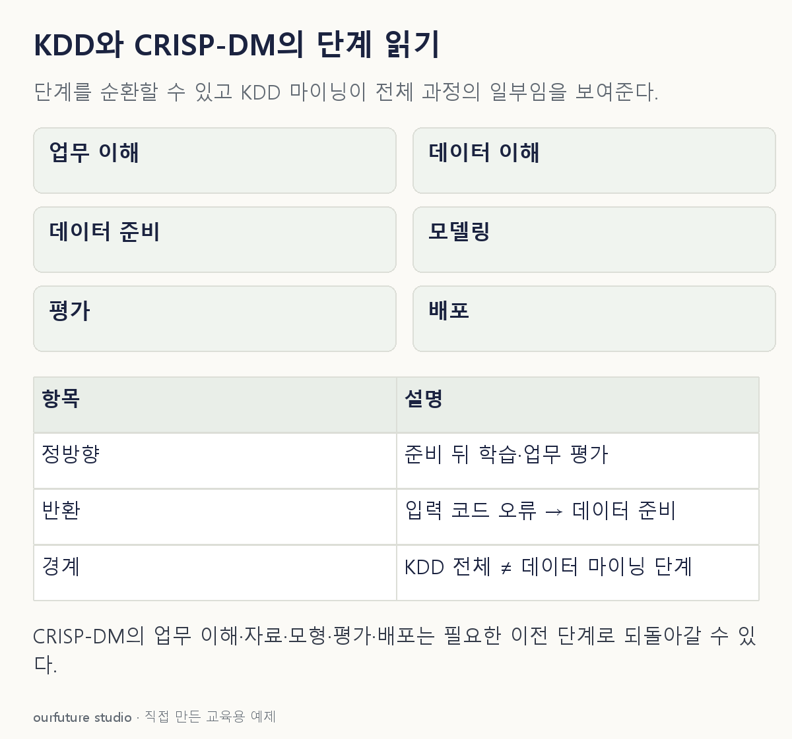

조건을 바꾸며 확인하기
KDD와 CRISP-DM을 일대일 대응시키지 않는다. 프로젝트를 실제 수행한 결과가 아니다.
기본 예제와 비교하기
아래 그림과 표는 글의 기본 조건입니다. 입력을 바꾼 결과는 계산 칸에서 확인하세요.

같은 문제를 직접 골라 보기
CRISP-DM에서 예측모형을 학습한 뒤 업무 목표에 맞는지 검토한다.
조건을 더 바꾸면?
학습 중 입력 코드 오류가 발견돼 다시 자료를 정리한다면 절차 위반인가?
변형 풀이 확인
아니다. 필요한 이전 단계로 돌아가는 반복이 허용된다.
CRISP-DM은 단계 간 의존 관계를 제시하며 일방향 진행만 강제하지 않는다.
마이닝은 전체 KDD와 같지 않으며 절차는 반복할 수 있다.